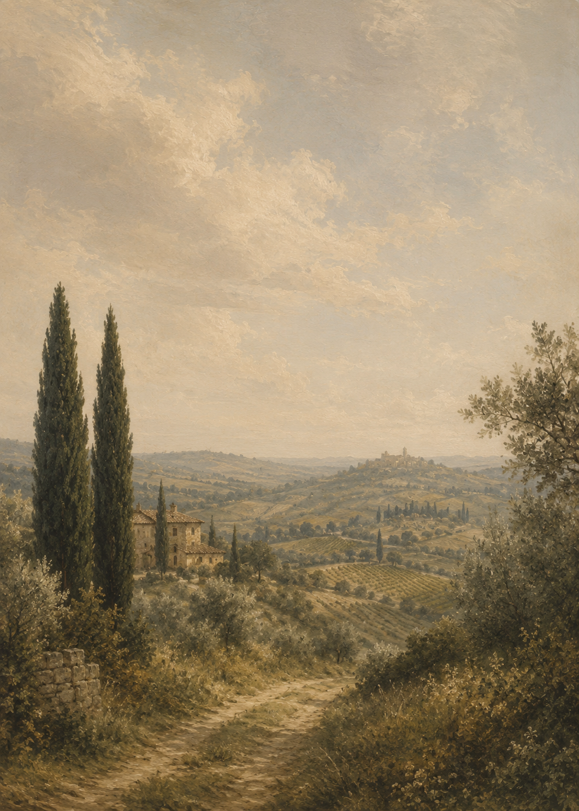

Location
Podere Piandarca – eingebettet in die toskanische Landschaft.
Ein Stück authentische Toskana, einst Zuhause von Bauern und ihrem Vieh, heute von der Familie behutsam neu belebt, ohne seine Geschichte zu verlieren.

17.07.2027
Hochzeit im Podere Piandarca zwischen Arezzo, Siena und Florenz.
Podere Piandarca
Reisen war für uns von Anfang an eine gemeinsame Leidenschaft. Wir lieben es, neue Kulturen zu entdecken und zu verstehen, wie Menschen andernorts leben, denken und fühlen.
Italien ist dabei unser liebstes Ziel geblieben. Wir lieben die Kultur, das Essen, die Wärme und Herzlichkeit der Menschen. Sie sind Meister darin, das Leben zu genießen und über Gefühle statt nur über Worte und Verstand zu kommunizieren.
Wir feiern im engen Kreis mit rund 30 Menschen, die uns besonders am Herzen liegen. Mit viel Zeit für echte Gespräche und besondere Momente.
Podere Piandarca – eingebettet in die toskanische Landschaft.
Ein Stück authentische Toskana, einst Zuhause von Bauern und ihrem Vieh, heute von der Familie behutsam neu belebt, ohne seine Geschichte zu verlieren.
Für die Übernachtung in der Umgebung empfehlen wir das Moody Hotel, das nur 10 Minuten von der Location entfernt ist. Auf Airbnb gibt es außerdem viele schöne Möglichkeiten, in der Nähe zu bleiben und die Toskana ganz entspannt zu genießen.
Wenn ihr möchtet, helfen wir euch auch gerne dabei, Gäste zusammenzubringen, damit ihr euch eine Unterkunft teilen oder gemeinsam anreisen könnt. Meldet euch dazu einfach bei uns.
Am Tag der Heirat ist jeder herzlich eingeladen, auf den Hof zu kommen, den Pool zu nutzen und einfach vorbeizuschauen. Es gibt eine schöne Landschaft zu genießen, ein paar Tiere und genug Platz zum Entspannen. Wir selbst übernachten dort für 3 Nächte.
Der Rest entwickelt sich von allein ;) Für genug Essen, Trinken, Musik und den ein oder anderen Spaß ist gesorgt.
Da wir im Juli feiern und es richtig heiß werden kann, empfehlen wir euch einen luftigen Leinen-Look. Stellt euch eine laue italienische Sommernacht vor: elegant und sommerlich, gerne in natürlichen, gedeckten Tönen statt Schwarz, leicht und locker statt bieder oder konservativ.
Wichtig ist uns vor allem eins: Wohlfühlen. Also zieht an, worin ihr euch bei Sommerhitze, gutem Essen und einer Feier unter freiem Himmel am wohlsten fühlt.
Ein kurzer Eindruck der Unterkunft:
Falls das Video nicht lädt, direkt auf YouTube öffnen.